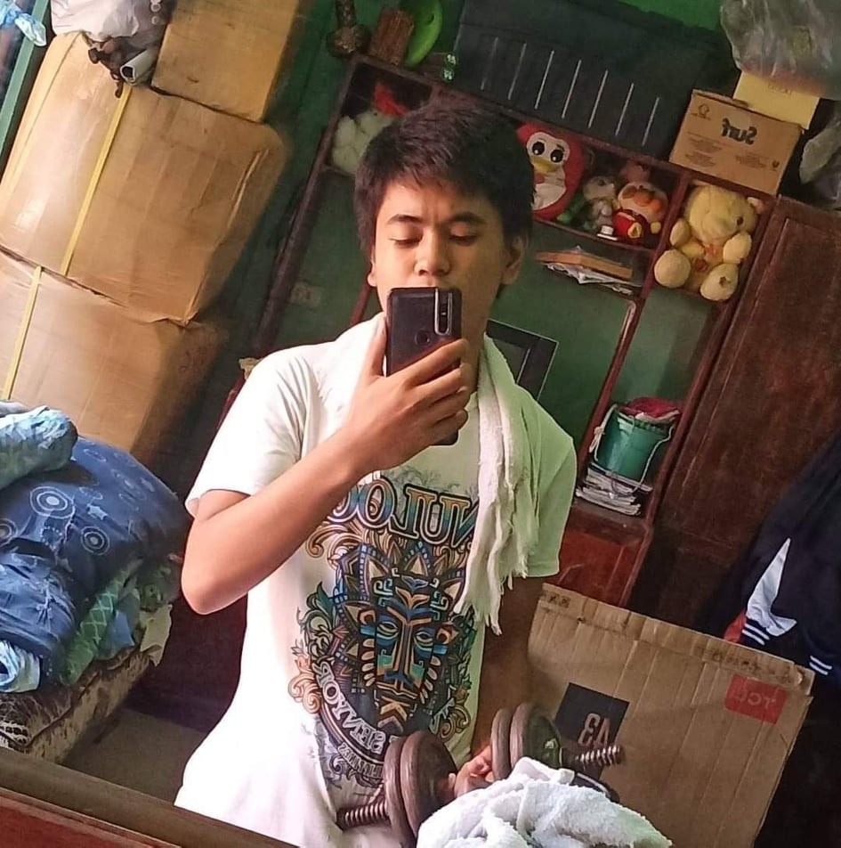
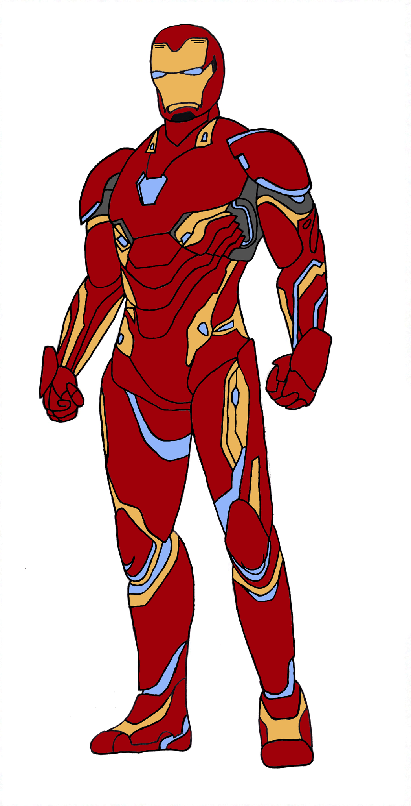
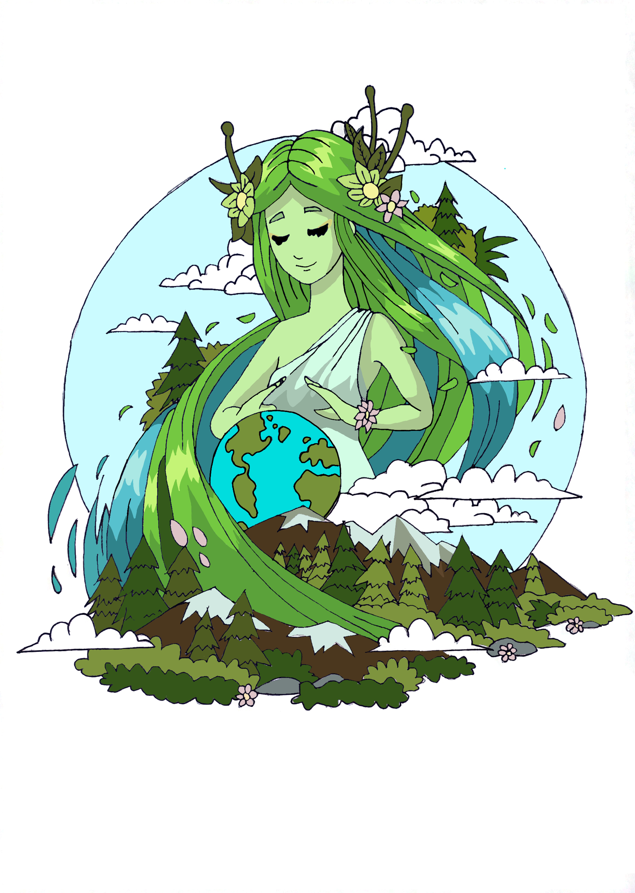
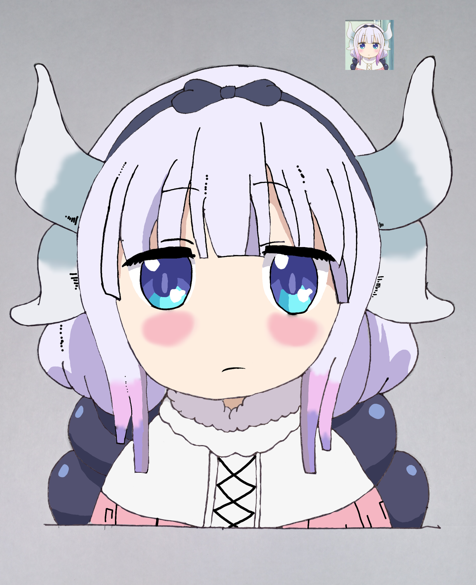
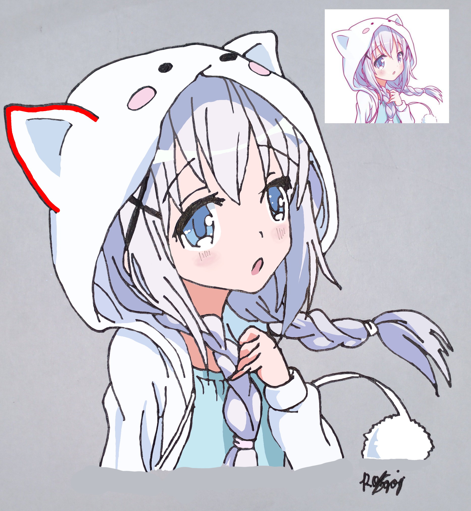
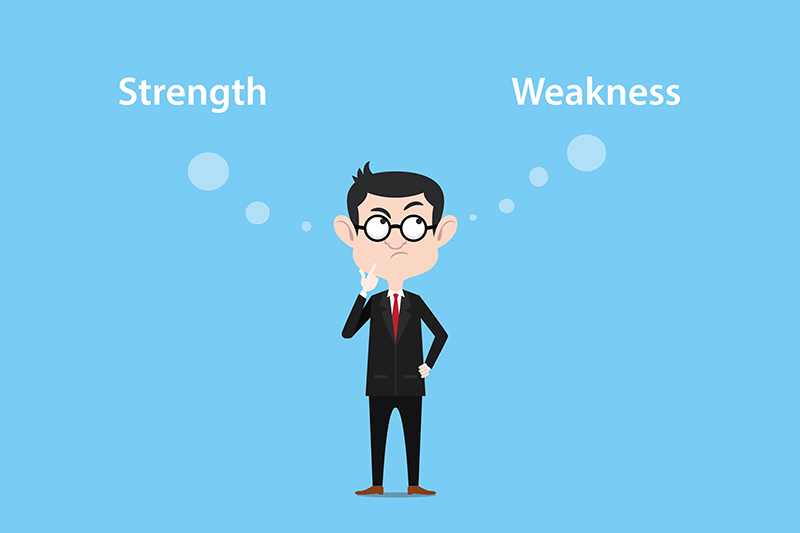

Name: Rovic Niño S. OngogAge: 19 years oldSex: MaleBirthday: September 10, 2002Likes: Friendly people, people with same interests, basketball and movies.Dislikes: Bullies, acting friendly, noise and bad peoples."If there is a little light of hope, move forward and don't give up!" |
I am the eldest son of my 4 siblings. I have 3 brothers (Richmond, Raphael, Renzo) and 1 little sister (Racy), we have a business of selling sacks of rice called " 5R Bigasan Store ", My father is working in the AFP in Camp Fort Santiago and my mother is a housewife. We live a simple and peacefull life with full happiness.
|  |
I only have one hobby and that is lifting, exercising, doing gym activities etc. relating to getting a healthy body, when I'm bored and also I have schedules every week. I sometimes lift with my brother and my father whenever I am free or they are free.Doing with my gym acitivites with my brothers and my father makes me happy!! |
|  |

  |
My only talent is Drawing, I have interest in drawing since I am a kid because I always watch the TV show about drawings so I am taken liking to it.After drawing by my hands, later in I get interest in digital art where you can draw digitally on devices. As you can see on the pictures that is some of the drawings I draw. |
|  |
Strengths:My strengths in IT field are self confident, gets task and actions do well, never disappoint everybody that is working hard and always check and observe the works of yourself and others so that there is no conflict and errors.Weaknesess:My weaknesess in IT field is that I canot do the work properly and many errors, getting the others disappointed with you because of your problems and lack of self-confident that you can finished it properly. |